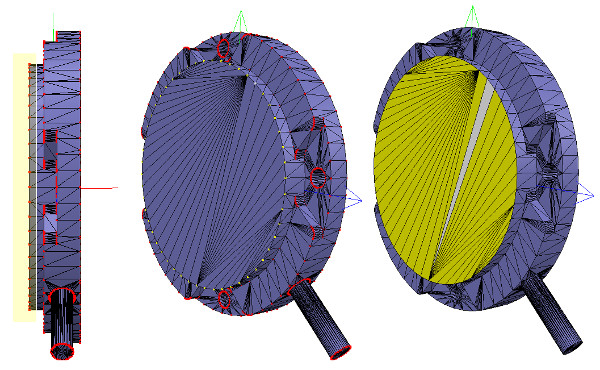
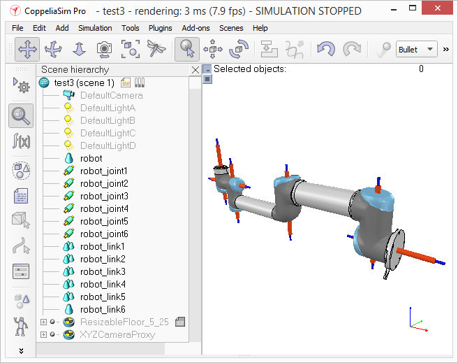

每周進度 <<
Previous Next >> Week17-1越野車零件設計繪圖考試
Week17
構建乾淨的模型教程
Building a clean model tutorial
本教程將指導您逐步構建機器人或任何其他項目的清晰仿真模型。 為了具有美觀，快速顯示，快速仿真和穩定的仿真模型，這是一個非常重要的主題，也許是最重要的方面
This tutorial will guide you step-by-step into building a clean simulation model, of a robot, or any other item. This is a very important topic, maybe the most important aspect, in order to have a nice looking, fast displaying, fast simulating and stable simulation model.
為了說明模型的構建過程，我們將構建以下操縱器：
To illustrate the model building process, we will be building following manipulator:

建立可見的形狀
Building the visible shapes
在構建新模型時，首先，我們僅處理它的視覺方面：動態方面（其簡化，優化模型的不合理之處），關節，傳感器等將在以後階段進行處理。
When building a new model, first, we handle only the visual aspect of it: the dynamic aspect (its undelying even more simplified/optimized model), joints, sensors, etc. will be handled at a later stage.
現在，我們可以使用[菜單欄->添加->基本形狀-> ...]在CoppeliaSim中直接創建基本形狀。基本形狀將是簡單的網格，對於我們的應用程序，可能沒有足夠的細節或幾何精度。 在這種情況下，我們的另一個選擇是從外部應用程序導入網格。
We could now directly create primitive shapes in CoppeliaSim with [Menu bar --> Add --> Primitive shape --> ...]. When doing this, we have the option to create pure shapes, or regular shapes. Pure shape will be optimized for dynamic interaction, and also directly be dynamically enabled (i.e. fall, collide, but this can be disabled at a later stage). Primitive shapes will be simple meshes, which might not contain enough details or geometric accuracy for our application. Our other option in that case would be to import a mesh from an external application.
從外部應用程序導入CAD數據時，最重要的是確保CAD模型不會太重，即不包含太多三角形。因為重型模型的顯示速度會很慢，並且還會減慢以後可能使用的各種計算模塊。 以下示例通常是一事無成（即使我們會在後面看到，即使有方法可以簡化CoppeliaSim中的數據）：
When importing CAD data from an external application, the most important is to make sure that the CAD model is not too heavy, i.e. doesn't contain too many triangles. This requirement is important since a heavy model will be slow in display, and also slow down various calculation modules that might be used at a later stage (e.g. minimum distance calculation, or dynamics). Following example is typically a no-go (even if, as we will see later, there are means to simplify the data within CoppeliaSim):
上面的CAD數據非常重：它包含許多三角形（超過47'000個），如果我們只在空的場景中使用單個三角形的實例，這是可以的。通常，我們建議對不超過2萬個三角形的機器人進行建模，但是在大多數情況下，5 000至10 000個三角形也可以。
Above CAD data is very heavy: it contains many triangles (more than 47'000), which would be ok if we would just use a single instance of it in an empty scene. But most of the time you will want to simulate several instances of a same robot, attach various types of grippers, and maybe have those robots interact with other robots, devices, or the environment. In that case, a simulation scene can quickly become too slow. Generally, we recommend to model a robot with no more than a total of 20'000 triangles, but most of the time 5'000-10'000 triangles would just do fine as well. Remember: less is better, in almost every aspect.
在幾乎所有方面，少即是好。
是什麼使上述模型如此重？包含孔和小細節的模型將需要更多的三角形面才能正確表示。因此，請嘗試從原始模型數據中刪除所有的孔，螺釘，物體的內部等。如果您將原始模型數據表示為參數化曲面/對象，則通常在大多數情況下只需選擇並刪除它們即可（例如在Solidworks中）。第二個重要步驟是以有限的精度導出原始數據：大多數CAD應用程序都允許您指定導出的網格的細節級別。當工程圖由大小對象組成時，分幾步導出對象可能也很重要。這是為了避免大對象定義太精確和小對象定義太粗：首先簡單地導出大對象（通過調整所需的精度設置），然後導出小對象。
What makes above model so heavy? First, models that contain holes and small details will require much more triangular faces for a correct representation. So, if possible, try to remove all the holes, screws, the inside of objects, etc. from your original model data. If you have the original model data represented as parametric surfaces/objects, then it is most of the time a simple matter of selecting the items and deleting them (e.g. in Solidworks). The second important step is to export the original data with a limited precision: most CAD applications let you specify the level of details of exported meshes. It might also be important to export the objects in several steps, when the drawing consists of large and small objects; this is to avoid having large objects too precisely defined (too many triangles) and small objects too roughly defined (too few triangles): simply export large objects first (by adjusting the desired precision settings), then small objects (by adjusting up precision settings).
CoppeliaSim當前支持以下CAD數據格式：OBJ，STL，DXF，3DS（僅Windows）和Collada。 還支持URDF，但此處未提及，因為它不是基於純網格的文件格式。
CoppeliaSim supports currently following CAD data formats: OBJ, STL, DXF, 3DS (Windows only), and Collada. URDF is also supported, but not mentionned here since it is not a pure mesh-based file format.
現在，假設我們已按照上一節中所述應用了所有可能的簡化。 導入後，我們可能最終仍然會留下一個過重的網格：
Now suppose that we have applied all possible simplifications as described in previous section. We might still end-up with a too heavy mesh after import:
還要注意導入的網格的方向錯誤：最好保持其方向不變，直到構建整個模型為止，因為如果在以後的階段中我們要導入與同一機器人相關的其他項目，它們將 自動具有相對於原始網格的正確位置/方向。
You can notice that the whole robot was imported as a single mesh. We will see later how to divide it appropriately. Notice also the wrong orientation of the imported mesh: best is to keep the orientation as it is, until the whole model was built, since, if at a later stage we want to import other items that are related to that same robot, they will automatically have the correct position/orientation relative to the original mesh.
在此階段，我們可以使用多種功能來簡化網格：
At this stage, we have several functions at our disposal, to simplify the mesh:
自動網格劃分：處理網格元素可以為我們提供更多的控制權。 可以通過[菜單欄->編輯->分組/合併->分割所選形狀]訪問該功能。 有時，網格劃分會超出預期。 在這種情況下，只需將邏輯上屬於一起的元素（即，具有相同的視覺屬性並且屬於同一鏈接的一部分）合併回一個單一形狀（[菜單欄->編輯->分組/合併-> 合併選定的形狀]）。
Automatic mesh division: allows to generate a new shape for all elements that are not linked together via a common edge. This does not always work for the selected mesh, but is always worth a try, since working on mesh elements gives us more control than if we had to work on all elements at the same time. The function can be accessed with [Menu bar --> Edit --> Grouping/Merging --> Divide selected shapes]. Sometimes, a mesh will be divided more than expected. In that case, simply merge elements that logically belong together (i.e. that will have the same visual attributes and that are part of the same link) back into one single shape ([Menu bar --> Edit -> Grouping/Merging --> Merge selected shapes]).
提取凸包：通過將其轉換為凸包來簡化網格。 可以通過[菜單欄->編輯->將選擇變形為凸形]來訪問該功能。
Extract the convex hull: allows to simplify the mesh by transforming it into a convex hull. The function can be accessed with [Menu bar --> Edit --> Morph selection into convex shapes].
抽取網格：減少網格中包含的三角形數量。 可以通過[菜單欄->編輯->縮小所選形狀...]訪問該功能。
Decimate the mesh: allows to reduce the number of triangles contained in the mesh. The function can be accessed with [Menu bar --> Edit --> Decimate selected shape...].
刪除網格的內部：允許通過刪除其內部來簡化網格。 此功能基於視覺傳感器，根據所選設置可能會或多或少地令人滿意。 可以通過[菜單欄->編輯->提取選定形狀的內部]訪問該功能。
Remove the inside of the mesh: allows to simplify the mesh by removing its inside. This function is based on vision sensors and might give more or less satisfying results depending on the selected settings. The function can be accessed with [Menu bar --> Edit --> Extract inside of selected shape].
沒有/可以應用上述功能的預定義順序（列表中的第一項除外），它在很大程度上取決於我們要簡化的網格的幾何形狀。 下圖說明了應用於導入的網格的上述功能：
There is no predefined order in which above functions can/should be applied (except for the first item in the list, which should always be tried first), it heavily depends on the geometry of the mesh we are trying to simplify. Following image illustrates above functions applied to the imported mesh (let's suppose the first item in the list didn't work for us):
凸包在現階段如何對我們沒有幫助。 首先使用網格抽取功能，然後運行兩次該功能，以將三角形的數量總共除以50。完成後，我們提取簡化形狀的內部並將其丟棄。 我們最終得到的網格總共包含2'660個三角形。 形狀包含的三角形/頂點的數量可以在形狀幾何對話框中看到。 對於整個機器人模型，2'660三角形是極少的三角形，因此視覺外觀可能會因此受到影響。
Notice how the convex hull doesn't help us at this stage. We decide to use the mesh decimation function first, and run the function twice in order to divide the number of triangles by a total of 50. Once that is done, we extract the inside of the simplified shape and discard it. We end-up with a mesh containing a total of 2'660 triangles (the original imported mesh contained more than 136'000 triangles!). The number of triangles/vertices a shape contains can be seen in the shape geometry dialog. 2'660 triangles are extremely few triangles for a whole robot model, and the visual appearance might suffer a little bit from it.
在這一階段，我們可以開始將機器人劃分為單獨的鏈接。您可以通過兩種不同的方式執行此操作：
At this stage we can start to divide the robot into separate links (remember, we currently have only a single shape for the whole robot). You can do this in two different ways:
自動網格劃分：它將檢查形狀並為未通過公共邊鏈接在一起的所有元素生成新形狀。可以通過[菜單欄->編輯->分組/合併->分割所選形狀]訪問該功能。
Automatic mesh division: this function, which was already described in previous section, will inspect the shape and generate a new shape for all elements that are not linked together via a common edge. This does not always work, but is always worth a try. The function can be accessed with [Menu bar --> Edit --> Grouping/merging --> Divide selected shapes].
手動網格劃分：通過三角形編輯模式，可以手動選擇邏輯上不屬於邏輯的三角形，然後單擊“提取形狀”。這將在場景中生成新形狀。 完成該操作後，刪除選定的三角形。
Manual mesh division: via the the triangle edit mode, you can manually select the triangles than logically belong together, then click Extract shape. This will generate a new shape in the scene. Delete the selected triangles after that operation.
現在，我們可以進一步細化/簡化單個形狀。 有時，如果改用凸包，形狀可能會看起來更好。 有時，您將不得不反複使用上述幾種技術，以獲得所需的結果。 以以下網格為例：
Now, we could further refine/simplify individual shapes. Sometimes also, a shape might look better if its convex hull is used instead. Othertimes, you will have to use several of above's described techniques iteratively, in order to obtain the desired result. Take for instance following mesh:
上面形狀的問題是，由於其中包含孔，我們無法很好地簡化它。 因此，我們必須通過形狀編輯模式進行更複雜的處理，在該模式下，我們可以提取邏輯上屬於同一凸形子實體的單個元素。 此過程可能需要進行多次迭代：我們首先提取3個近似凸元素。我們忽略作為兩個孔的一部分的三角形。在形狀編輯模式下編輯形狀時，可以方便地切換可見性圖層，以查看其他場景項所覆蓋的內容。
The problem with above's shape is that we cannot simplify it nicely, because of the holes it contains. So we have to go the more complicated way via the shape edit mode, where we can extract individual elements that logically belong to the same convex sub-entity. This process can take several iterations: we first extract 3 approximate convex elements. For now, we ignore the triangles that are part of the two holes. While editing a shape in the shape edit mode, it can be convenient to switch the visibility layers, in order to see what is covered by other scene items.

我們最終得到三個形狀的總和，但是其中兩個將需要進一步改進。 現在我們可以擦除作為孔的一部分的三角形。 最後，我們分別提取3種形狀的凸包，然後將其與[菜單欄->編輯->分組/合併->合併所選形狀]合併在一起：
We end up with a toal of three shapes, but two of them will need further improvement. Now we can erase the triangles that are part of the holes. Finally, we extract the convex hull individually for the 3 shapes, then merge them back together with [Menu bar --> Edit --> Grouping/Merging --> merge selected shapes]:
在CoppeliaSim中，我們可以啟用/禁用每種形狀的邊緣顯示。 我們還可以指定邊緣顯示時要考慮的角度。 相似的參數是陰影角，它指示形狀將在多方面顯示。 這些參數以及其他一些參數（例如形狀顏色）可以在形狀屬性中進行調整。形狀有多種風味。 到目前為止，在本教程中，我們僅處理簡單的形狀：簡單的形狀具有一組視覺屬性。如果合併兩個形狀，則結果將是一個簡單的形狀。 您還可以對形狀進行分組，在這種情況下，每個形狀將保留其視覺屬性。
In CoppeliaSim, we can enable/disable edge display for each shape. We can also specify an angle that will be taken into account for the edge display. A similar parameter is the shading angle, that dictates how facetted the shape will display. Those parameters, and a few others such as the shape color, can be adjusted in the shape properties. Remember that shapes come in various flavours. In this tutorial we have only dealt with simple shapes up to now: a simple shape has a single set of visual attributes (i.e. one color, one shading angle, etc.). If you merge two shapes, then the result will be a simple shape. You can also group shapes, in which case, each shape will retain its visual attributes.
在下一步中，我們可以合併邏輯上屬於一起的元素（如果它們屬於同一剛性元素，並且具有相同的視覺屬性）。 然後，我們更改各種元素的視覺屬性。我們選擇所有具有相同視覺屬性的形狀，然後控制選擇已調整的形狀，然後單擊“應用於選擇”，一次是“顏色”，一次是其他屬性，在形狀屬性中：這將轉移所有 所選形狀的視覺屬性。 我們最終得到17個單獨的形狀：
In next step, we can merge elements that logically belong together (if they are part of the same rigid element, and if they have the same visual attributes). Then we change the visual attributes of the various elements. The easiest ist to adjust a few shapes that have different colors and visual attributes, and if we name the color with a specific string, we can later easily programmatically change that color, also if the shape is part of a compound shape. Then, we select all the shapes that have the same visual attributes, then control-select the shape that was already adjusted, then click Apply to selection, once for the Colors, once for the other properties, in the shape properties: this transfers all visual attributes to the selected shapes (including the color name if you provided one). We end up with 17 individual shapes:

現在，我們可以使用[菜單欄->編輯->分組/合併->分組所選形狀]對屬於同一鏈接的形狀進行分組。 我們最終得到7個形狀：機器人的基礎和6個移動鏈接。正確命名對像也很重要：可以通過雙擊場景層次結構中的對象名稱來做到這一點。 基礎應始終是機械手或模型名稱，其他對象應始終包含基礎對象名稱，例如：robot（基礎），robot_link1，robot_proximitySensor等。通過默認，形狀將分配給可見性層1，但可以 在對象通用屬性中進行更改。 默認情況下，僅激活場景的可見性層1-8。 現在，我們有了以下內容（模型ResizableFloor_5_25模型在模型屬性對話框中暫時不可見）：
Now we can group the shapes that are part of the same link with [Menu bar --> Edit --> Grouping/merging -> Group selected shapes]. We end up with 7 shapes: the base of the robot (or base of the robot's hierarchy tree), and 6 mobile links. It is also important to correctly name your objects: you we do this with a double-click on the object name in the scene hierarchy. The base should always be the robot or model name, and the other objects should always contain the base object name, like: robot (base), robot_link1, robot_proximitySensor, etc. By defaut, shapes will be assigned to visibility layer 1, but can be changed in the object common properties. By default, only visibility layers 1-8 are activated for the scene. We now have following (the model ResizableFloor_5_25 was temporarily made invisible in the model properties dialog):
創建或修改形狀時，CoppeliaSim將自動設置其參考框架的位置和方向。 形狀的參考框架將始終位於形狀的幾何中心。 將選擇框架方向，以便形狀的邊界框保持盡可能小。我們隨時可以隨時調整形狀的參考框架的方向。
When a shape is created or modified, CoppeliaSim will automatically set its reference frame position and orientation. A shape's reference frame will always be positioned at the shape's geometric center. The frame orientation will be selected so that the shape's bounding box remains as small as possible. This does not always look nice, but we can always reorient a shape's reference frame at any time. We now reorient the reference frames of all our created shapes with [Menu bar --> Edit --> Reorient bounding box --> with reference frame of world]. You have more options to reorient a reference frame in the shape geometry dialog.
建立關節
Building the joints
現在，我們將照顧關節/馬達。大多數時候，我們知道每個關節的確切位置和方向。在這種情況下，我們只需使用[菜單欄->添加->關節-> ...]添加關節，然後可以使用位置對話框和方向對話框更改它們的位置和方向。其他情況下，我們只有Denavit-Hartenberg（即D-H）參數。在這種情況下，我們可以通過模型瀏覽器中位於Models / tools / Denavit-Hartenberg聯合creator.ttm中的工具模型來構建關節。有時，我們沒有關於關節位置和方向的信息。然後，我們需要從導入的網格中提取它們。讓我們假設這是我們的情況，而是打開一個新場景，然後再次導入原始CAD數據。大多數時候，我們可以從原始網格中提取網格或基本形狀。第一步是細分原始網格。如果那不起作用，我們將通過三角形編輯模式進行操作。假設我們可以劃分原始網格。現在，我們可以檢查較小的對象。我們正在尋找旋轉形狀，可以用作在其位置以相同方向創建關節的參考。刪除所有不需要的對象。有時在多個打開的場景中工作也很有用，以便於可視化。我們關注機器人的基座：它包含一個圓柱體，該圓柱體的第一個關節的位置正確。在三角形編輯模式下，我們有：
Now we will take care of the joints/motors. Most of the time, we know the exact position and orientation of each of the joints. In that case, we simply add the joints with [Menu bar --> Add --> Joints --> ...], then we can change their position and orientation with the position dialog and orientation dialog. In other situations, we only have the Denavit-Hartenberg (i.e. D-H) parameters. In that case, we can build our joints via the tool model located in Models/tools/Denavit-Hartenberg joint creator.ttm, in the model browser. Othertimes, we have no information about the joint locations and orientations. Then, we need to extract them from the imported mesh. Let's suppose this is our case. Instead of working on the modified, more approximate mesh, we open a new scene, and import the original CAD data again. Most of the time, we can extract meshes or primitive shapes from the original mesh. The first step is to subdivide the original mesh. If that does not work, we do it via the triangle edit mode. Let's suppose that we could divide the original mesh. We now have smaller objects that we can inspect. We are looking for revolute shapes, that could be used as reference to create joints at their locations, with the same orientation. First, remove all objects that are not needed. It is sometimes also useful to work across several opened scenes, for easier visualization/manipulation. In our case, we focus first on the base of the robot: it contains a cylinder that has the correct position for the first joint. In the triangle edit mode, we have:
我們通過頁面選擇器工具欄按鈕更改相機視圖，以便從側面查看對象。然後，我們切換到頂點編輯模式，並選擇屬於上光盤的所有頂點。通過打開/關閉某些層，我們可以隱藏場景中的其他對象。 然後我們切換回三角形編輯模式：
We change the camera view via the page selector toolbar button, in order to look at the object from the side. The fit-to-view toolbar button can come in handy to correctly frame the object in edition. Then we switch to the vertex edit mode and select all vertices that belong to the upper disc. Remember that by switching some layers on/off, we can hide other objects in the scene. Then we switch back to the triangle edit mode:

現在，我們單擊“提取圓柱體”（在這種情況下，“提取形狀”也將起作用），這只是根據選定的三角形在場景中創建了圓柱體形狀。我們離開編輯模式並放棄更改。現在，通過[菜單欄->添加->關節->旋轉]添加旋轉關節，使其保持選中狀態，然後控制選擇提取的圓柱形狀。在位置對話框的“位置”選項卡上，單擊“應用於選擇”：這基本上將圓柱體的x / y / z位置複製到關節。現在兩個位置都相同。在方向對話框中的方向選項卡上，我們還單擊“應用於選擇”：所選對象的方向現在也相同。如果需要，我們可以在該對話框的“旋轉”選項卡上執行此操作。同樣，我們也可以沿關節的軸移動關節，甚至進行更複雜的操作。這就是我們所擁有的：
Now we click Extract cylinder (Extract shape would also work in that case), this just created a cylinder shape in the scene, based on the selected triangles. We leave the edit mode and discard the changes. Now we add a revolute joint with [Menu bar --> Add --> Joint --> Revolute], keep it selected, then control-select the extracted cylinder shape. In the position dialog, on the position tab, we click Apply to selection: this basically copies the x/y/z position of the cylinder to the joint. Both positions are now identical. In the orientation dialog, on the orientation tab, we also click Apply to selection: the orientation of our selected objects is now also the same. Sometimes, we will need to additionally rotate the joint about 90/180 degrees around its own reference frame in order to obtain the correct orientation or rotation direction. We could do that on the rotation tab of that dialog if needed (in that case, do not forget to click the Own frame button). In a similar way we could also shift the joint along its axis, or even do more complex operations. This is what we have:

現在，我們將關節複製回到原始場景中，並保存它。 我們對機器人中的所有關節重複上述過程，然後重命名它們。 我們還將使所有關節的關節屬性稍長一些，以便查看所有關節。 通過默認，關節將分配給可見性層2，但可以在對象公共屬性中對其進行更改。 現在，我們將所有關節分配給可見性層10，然後為場景臨時啟用可見性層10，以使這些關節也可視化（默認情況下，僅激活場景的可見性層1-8）。 這就是我們所擁有的（模型ResizableFloor_5_25模型在模型屬性對話框中暫時不可見）：
Now we copy the joint back into our original scene, and save it (do not forget to save your work on a regular basis! The undo/redo function is useful, but doesn't protect you against other mishaps). We repeat above procedure for all the joints in our robot, then rename them. We also make all joints a little bit longer in the joint properties, in order to see them all. By defaut, joints will be assigned to visibility layer 2, but can be changed in the object common properties. We assign now all joints to visibility layer 10, then temporarily enable visibility layer 10 for the scene to also visualize those joints (by default, only visibility layers 1-8 are activated for the scene). This is what we have (the model ResizableFloor_5_25 was temporarily made invisible in the model properties dialog):

至此，我們可以開始構建模型層次結構並完成模型定義。 但是，如果我們希望動態啟用opur機器人，則還有一個額外的中間步驟：
At this point, we could start to build the model hierarchy and finish the model definition. But if we want opur robot to be dynamically enabled, then there is an additional intermediate step:
建立動態形狀
Building the dynamic shapes
如果我們希望我們的機器人能夠動態啟用，即對碰撞，跌落等做出反應，那麼我們需要適當地創建/配置形狀：形狀可以是：
If we want our robot to be dynamically enabled, i.e. react to collisions, fall, etc., then we need to create/configure the shapes appropriately: a shape can be:
動態或靜態：動態（或非靜態）形狀會掉落並受到外力/扭矩的影響。 另一方面，靜態（或非動態）形狀將保持不變，或跟隨其父級在場景層次中的移動。
dynamic or static: a dynamic (or non-static) shape will fall and be influences by external forces/torques. A static (or non-dynamic) shape on the other hand, will stay in place, or follow the movement of its parent in the scene hierarchy.
可響應或不可響應：可響應形狀會引起與其他可響應形狀的碰撞反應。 如果它們是動態的，它們（和/或它們的對撞機）的運動將受到影響。
respondable or non-respondable: a respondable shape will cause a collision reaction with other respondable shapes. They (and/or) their collider, will be influenced in their movement if they are dynamic. On the other hand, non-respondable shapes will not compute a collision response if they collide with other shapes.
負責任的形狀應盡可能簡單，以實現快速穩定的仿真。 物理引擎將能夠以不同的速度和穩定性模擬以下5種類型的形狀：
Above two points are illustrated here. Respondable shapes should be as simple as possible, in order to allow for a fast and stable simulation. A physics engine will be able to simulate following 5 types of shapes with various degrees of speed and stability:
純形狀：純形狀將穩定並由物理引擎非常有效地處理。 缺點是純形狀的幾何形狀受到限制：主要是長方體，圓柱體和球體。 如果可能的話，將其用於與其他物品接觸時間較長的物品（例如，人形機器人的腳，串行機械手的底座，抓手的手指等）。 可以使用[菜單欄->添加->基本形狀]創建純形狀。
Pure shapes: a pure shape will be stable and handled very efficiently by the physics engine. The draw-back is that pure shapes are limited in geometry: mostly cuboids, cylinders and spheres. If possible, use those for items that are in contact with other items for a longer time (e.g. the feet of a humanoid robot, the base of a serial manipulator, the fingers of a gripper, etc.). Pure shapes can be created with [Menu bar --> Add --> Primitive shape].
純複合形狀：純複合形狀是幾個純形狀的組合。 它的性能幾乎與純形狀一樣，並具有相似的特性。 可以通過對幾個純形狀進行分組來生成純複合形狀[菜單欄->編輯->分組/合併->分組所選形狀]。
Pure compound shapes: a pure compound shape is a grouping of several pure shapes. It performs almost as well as pure shapes and shares similar properties. Pure compound shapes can be generated by grouping several pure shapes [Menu bar --> Edit --> Grouping/Merging --> Group selected shapes].
凸形狀：當由物理引擎處理時，凸形狀的穩定性會降低一些，而計算時間也會增加。 與純形狀相比，它允許使用更通用的幾何形狀（僅要求：它必須是凸形的）。 如果可能，將凸形用於偶爾與其他物品接觸的物品（例如，機器人的各個鏈接）。 可以使用[菜單欄->添加->選擇的凸包]。
Convex shapes: a convex shape will be a little bit less stable and take a little bit more computation time when handled by the physics engine. It allows for a more general geometry (only requirement: it need to be convex) than pure shapes. If possible, use convex shapes for items that are sporadically in contact with other items (e.g. the various links of a robot). Convex shapes can be generated with [Menu bar --> Add --> Convex hull of selection] or with [Menu bar --> Edit --> Morph selection into convex shapes].
複合凸形狀或凸分解形狀：凸分解形狀是幾個凸形狀的組合。 它的性能幾乎與凸形相同。 可以通過將多個凸形分組[菜單欄->編輯->分組/合併->分組選定的形狀]，並使用[菜單欄->添加->選擇的凸分解...]來生成凸分解形狀。 ]。
Compound convex shapes, or convex decomposed shapes: a convex decomposed shape is a grouping of several convex shapes. It performs almost as well as convex shapes and shares similar properties. Convex decomposed shapes can be generated by grouping several convex shapes [Menu bar --> Edit --> Grouping/Merging --> Group selected shapes], with [Menu bar --> Add --> Convex decomposition of selection...], or with [Menu bar --> Edit --> Morph selection into its convex decomposition...].
隨機形狀：隨機形狀是既非凸形也不是純淨的形狀。 它通常具有較差的性能（計算速度和穩定性）。 盡量避免使用隨機形狀。
Random shapes: a random shape is a shape that is not convex nor pure. It generally has poor performance (calculation speed and stability). Avoid using random shapes as much as possible.
因此，優先順序為：純形狀，純複合形狀，凸形，複合凸形，最後是隨機形狀。 對於要構建的機器人，我們將其基座設為純圓柱體，將其他鏈接設為凸形或凸形分解形狀。
So the order of preference would be: pure shapes, pure compound shapes, convex shapes, compound convex shapes, and finally random shapes. Make sure to also read this page. In case of the robot we want to build, we will make the base of the robot as a pure cylinder, and the other links as convex or convex decomposed shapes.
我們也可以將動態啟用的形狀用作機器人的可見部分，但是看起來不夠好。 因此，我們將為在本教程第一部分中創建每個可見形狀構建一個動態的副本：隱藏部分將代表動態模型，並由物理引擎專用，可見部分將用於可視化，接近傳感器檢測等。
We could use the dynamically enabled shapes also as the visible parts of the robot, but that would probably not look good enough. So instead, we will build for each visible shape we have created in the first part of the tutorial a dynamically enabled counterpart, which we will keep hidden: the hidden part will represent the dynamic model and be exclusively used by the physics engine, while the visible part will be used for visualization, but also for minimum distance calculations, proximity sensor detections, etc.
我們選擇對像機器人，將其複制並粘貼到新場景中（以保持原始模型不變），然後啟動三角形編輯模式。 如果對像機器人是複合形狀，我們首先必須將其取消組合，然後合併各個形狀。現在，我們選擇代表電源線的幾個三角形，並將其刪除。然後，選擇該形狀中的所有三角形，然後單擊“提取圓柱體”。現在我們可以離開編輯模式，我們的基礎對象表示為純圓柱體：
We select object robot, copy-and-paste it into a new scene (in order to keep the original model intact) and start the triangle edit mode. If object robot was a compound shape, we would first have had to ungroup it ([Menu bar --> Edit --> Grouping/Merging --> Ungroup selected shapes]) then merge the individual shapes ([Menu bar --> Edit --> Grouping/Merging --> Merge selected shapes]) before being able to start the triangle edit mode. Now we select the few triangles that represent the power cable, and erase them. Then we select all triangles in that shape, and click Extract cylinder. We can now leave the edit mode and we have our base object represented as a pure cylinder:

我們將新形狀重命名為robot_dyn，將其分配給可見性層9，然後將其複製到原始場景。 其餘鏈接將建模為凸形或複合凸形。 現在，我們選擇第一個移動鏈接（即對象robot_link1），並使用[菜單欄->添加->選擇的凸包]從中生成凸形。 我們將其重命名為robot_link_dyn1並將其分配給可見性層9。當提取凸包並沒有保留足夠的原始形狀細節時，然後將所有凸包與 [菜單欄->編輯->分組/合併->對選定形狀進行分組]。 如果這似乎有問題或很耗時，則可以使用[菜單欄->添加->選擇的凸分解...]自動提取凸分解的形狀：
We rename the new shape (with a double-click on its name in the scene hierarchy) as robot_dyn, assign it to visibility layer 9, then copy it to the original scene. The rest of the links will be modelled as convex shapes, or compound convex shapes. We now select the first mobile link (i.e. object robot_link1) and generate a convex shape from it with [Menu bar --> Add --> Convex hull of selection]. We rename it to robot_link_dyn1 and assign it to visibility layer 9. When extracting the convex hull doesn't retain enough details of the original shape, then you could still manually extract several convex hulls from its composing elements, then group all the convex hulls with [Menu bar --> Edit --> Grouping/Merging --> Group selected shapes]. If that appears to be problematic or time consuming, then you can automatically extract a convex decomposed shape with [Menu bar --> Add --> Convex decomposition of selection...]:
現在，我們對所有剩餘的機器人鏈接重複相同的過程。 完成後，我們將每個可見的形狀附加到其相應的不可見的動態吊墜上。 為此，我們先選擇可見的形狀，然後按住Control鍵並單擊以選擇其動態吊墜，然後選擇[菜單欄->編輯->將最後選擇的對象設為父對象]。 通過將可見形狀拖動到場景層次中的動態吊墜上，可以實現相同的結果：
We now repeat the same procedure for all remaining robot links. Once that is done, we attach each visible shape to its corresponding invisible dynamic pendant. We do this by selecting first the visible shape, then via control-click selecting its dynamic pendant then [Menu bar --> Edit --> Make last selected object parent]. The same result can be achieved by dragging the visible shape onto its dynamic pendant in the scene hierarchy:
然後，我們仍然必須將動態形狀配置為動態且可響應的。我們在形狀動力學屬性中執行此操作。首先選擇基本動態形狀，然後檢查“主體是可響應的”項。啟用前四個“本地可響應掩碼”標誌，並禁用後四個“本地可響應掩碼”標誌：對於連續的可響應鏈接不要彼此衝突非常重要。
We still need to take care of a few things: first, since we want the dynamic shapes only visible to the physics engine, but not to the other calculation modules, we uncheck all object special properties for the dynamic shapes, in the object common properties.
最後，我們仍然需要將動態形狀標記為“身體是動態的”。 我們也在形狀動力學屬性中執行此操作。 然後，我們可以手動輸入質量和慣性張量屬性，或者通過單擊“計算選定凸形的質量和慣性屬性”來自動計算（推薦）那些值。 機器人的這種動態基座是一種特殊情況：大多數時候，我們希望機器人的基座（即robot_dyn）是非動態的（即靜態），否則，如果單獨使用，則機器人可能會在運動過程中掉落。 我們通過啟用“如果獲取父項時設置為動態”項，然後禁用“主體為動態”項來做到這一點。 現在運行仿真：除了機器人的基座之外，所有動態形狀都應下降。 附加的視覺形狀將跟隨其動態吊墜。
Then, we still have to configure the dynamic shapes as dynamic and respondable. We do this in the shape dynamics properties. Select first the base dynamic shape (i.e. robot_dyn), then check the Body is respondable item. Enable the first 4 Local respondable mask flags, and disable the last 4 Local respondable mask flags: it is important for consecutive respondable links not to collide with each other. For the first mobile dynamic link in our robot (i.e. robot_link_dyn1), we also enable the Body is respondable item, but this time we disable the first 4 Local respondable mask flags, and enable the last 4 Local respondable mask flags. We repeat the above procedure with all other dynamic links, while always alternating the Local respondable mask flags: once the model will be defined, consecutive dynamic shapes of the robot will not generate any collision response when interacting with each other. Try to always end up with a construction where the dynamic base of the robot, and the dynamic last link of the robot have only the first 4 Local respondable mask flags enabled, so that we can attach the robot to a mobile platform, or attach a gripper to the last dynamic link of the robot without dynamic collision interferences.
Finally, we still need to tag our dynamic shapes as Body is dynamic. We do this also in the shape dynamics properties. We can then enter the mass and inertia tensor properties manually, or have those values automatically computed (recommended) by clicking Compute mass & inertia properties for selected convex shapes. Remember also this and that dynamic design considerations. This dynamic base of the robot is a special case: most of the time we want the base of the robot (i.e. robot_dyn) to be non-dynamic (i.e. static), otherwise, if used alone, the robot might fall during movement. But as soon as we attach the base of the robot to a mobile platform, we want the base to become dynamic (i.e. non-static). We do this by enabling the Set to dynamic if gets parent item, then disabling the Body is dynamic item. Now run the simulation: all dynamic shapes, except for the base of the robot, should fall. That attached visual shapes will follow their dynamic pendants.
型號定義
Model definition
現在我們準備定義模型了。 我們從建立模型層次結構開始：通過選擇robot_link_dyn6，然後控制選擇robot_joint6，然後選擇[菜單欄->編輯->創建最後一個選定的對象，將最後一個動態機器人鏈接（robot_link_dyn6）附加到其相應的關節。 我們還可以通過簡單地將對象robot_link_dyn6拖到場景層次結構中的robot_link6上來完成此步驟。 現在，我們將robot_joint6附加到robot_link_dyn5上，依此類推，直到到達機器人的底部。 現在，我們具有以下場景層次結構：
Now we are ready to define our model. We start by building the model herarchy: we attach the last dynamic robot link (robot_link_dyn6) to its corresponding joint (robot_joint6) by selecting robot_link_dyn6, then control-selecting robot_joint6, then [Menu bar --> Edit --> Make last selected object parent]. We could also have done this step by simply dragging object robot_link_dyn6 onto robot_link6 in the scene hierarchy. We go on by now attaching robot_joint6 to robot_link_dyn5, and so on, until arrived at the base of the robot. We now have following scene hierarchy:
為模型庫起一個簡單的名字是很好而且更合乎邏輯的。因此，我們將robot重命名為robot_visibleBase，並將robot_dyn重命名為robot。 現在我們選擇層次結構樹的基礎（即對像機械手），並在對象公共屬性中啟用``對像是模型基礎''。我們還使對象/模型可以轉移或接受DNA。 出現了一個模型包圍盒，包圍了整個機器人。 但是，邊界框似乎太大：這是因為邊界框還包含不可見的項，通過對所有關節啟用“不顯示為內部模型”選擇項，將關節從模型邊界框中排除。這也是一個有用的選項，可以將大型傳感器或其他項目也排除在模型邊界框之外。我們現在有以下情況：
It is nice and more logical to have a simple name for the model base, since the model base will also represent the model itself. So we rename robot to robot_visibleBase, and robot_dyn to robot. Now we select the base of the hierarchy tree (i.e. object robot) and in the object common properties we enable Object is model base. We also enable Object/model can transfer or accept DNA. A model bounding box appeared, encompassing the whole robot. The bounding box however appears to be too large: this is because the bounding box also encompasses the invisible items, such as the joints. We now exclude the joints from the model bounding box by enabling the Don't show as inside model selection item for all joints. We could do the same procedure for all invisible items in our model. This is also a useful option in order to also exclude large sensors or other items from the model bounding box. We now have following situation:
現在，我們保護模型免受意外修改。 我們選擇機器人中的所有可見對象，然後啟用“選擇模型的基礎”。 這使我們可以像對待單個對像一樣操作模型。 我們仍然可以通過按住Shift鍵並單擊場景或在場景層次中選擇對象來選擇機器人中的可見對象。 現在，我們將機器人置於正確的默認位置/方向。 首先，我們將當前場景保存為參考。 然後，我們選擇模型並適當修改其位置/方向。 將模型（即其基礎對象）定位在X = 0和Y = 0處被認為是一種好習慣。
We now protect our model from accidental modification. We select all visible objects in the robot, then enable Select base of model instead: if we now click a visible link in the scene, the base of the robot will be selected instead. This allows us to manipulate the model as if it was a single object. We can still select visible objects in the robot via control-shift-clicking in the scene, or by selecting the object in the scene hierarchy. We now put the robot into a correct default position/orientation. First, we save current scene as a reference (e.g. if at a later stage we need to import CAD data that have the same orientation at the curent robot). Then we select the model and modify its position/orientation appropriately. It is considered good practice to position the model (i.e. its base object) at X=0 and Y=0.
現在我們運行模擬：由於默認情況下關節不受控制，因此機器人將崩潰。 在上一階段添加關節時，我們以力/扭矩模式創建了關節，但其電動機或控制器已禁用。 現在，我們可以根據需要調整關節。 在我們的案例中，我們希望為每個控制器都提供一個簡單的PID控制器。 在關節動態屬性中，單擊“啟用電機”並調整最大扭矩。 然後，單擊啟用控制環，然後選擇位置控制（PID）。
We now run the simulation: the robot will collapse, since the joints are not controlled by default. When we added the joints in the previous stage, we created joints in force/torque mode, but their motor or controller was disabled (by default). We can now adjust our joints to our requirements. In our case, we want a simple PID controller for each one of them. In the joint dynamic properties, we click Motor enabled and adjust the maximum torque. We then click Control loop enabled and select Position control (PID). We now run the simulation again: the robot should hold its position. Try to switch the current physics engine to see if the behaviour is consistent across all supported physics engines. You can do this via the appropriate toolbar button, or in the general dynamics properties.
在仿真過程中，我們現在通過“動態內容可視化和驗證”工具欄按鈕來驗證場景動態內容。 現在，將僅顯示物理引擎考慮的項目，並且該顯示使用顏色編碼。 始終執行此操作非常重要，尤其是在動態模型無法按預期運行時，為了快速調試模型，尤其如此。 同樣，在仿真過程中請始終查看場景層次：動態啟用的對象應在其名稱的右側顯示一個球形圖標。
During simulation, we now verify the scene dynamic content via the Dynamic content visualization & verification toolbar button. Now, only items that are taken into account by the physics engine will be display, and the display is color-coded. It is very important to always do this, and specially when your dynamic model doesn't behave as expected, in order to quickly debug the model. Similarly, always look at the scene hierarchy during simulation: dynamically enabled objects should display a ball-bounding icon on the right-hand side of their name.
最後，我們需要準備機器人，以便我們可以輕鬆地將抓取器連接到它，或輕鬆地將機器人連接到移動平台。
Finally, we need to prepare the robot so that we can easily attach a gripper to it, or easily attach the robot to a mobile platform (for instance). Two dynamically enabled shapes can be rigidly attached to each other in two different ways:
通過對它們進行分組：選擇形狀，然後選擇[菜單欄->編輯->分組/合併->對選定形狀進行分組]。
by grouping them: select the shapes, then [Menu bar --> Edit --> Grouping/Merging --> Group selected shapes].
通過通過力/扭矩傳感器進行連接：力扭矩傳感器還可以充當兩個單獨的動態啟用形狀之間的剛性鏈接。
by attaching them via a force/torque sensor: a force torque sensor can also act as a rigid link between two separate dynamically enabled shapes.
現在，我們將抓手模型拖到場景中，使其保持選中狀態，然後按住Control鍵單擊並單擊附著力傳感器，然後單擊“裝配/拆卸”工具欄按鈕。 夾持器到位：
In our case, only option 2 is of interest. We create a force/torque sensor with [Menu bar --> Add --> Force sensor], then move it to the tip of the robot, then attach it to object robot_link_dyn6. We change its size and visual appearance appropriately (a red force/torque sensor is often perceived as an optional attachment point, check the various robot models available). We also change its name to robot_attachment:
抓具知道如何附加自身，因為它在模型定義期間進行了適當的配置。我們選擇機器人模型，然後在對象公共屬性中單擊“組裝”。 為“父項”匹配值設置一個空字符串，然後單擊“設置矩陣”。 這將記住當前基礎對象的局部轉換矩陣，並使用它相對於移動機器人的附著點定位/定向。 為了驗證我們做的正確，我們將模型Models / robots / mobile / KUKA Omnirob.ttm拖到場景中。 然後，我們選擇機器人模型，然後在移動平台上按住Control鍵並單擊其中一個附接點，然後單擊“組裝/拆卸”工具欄按鈕。 我們的機器人應該正確地將自己放置在移動機器人的頂部：
The gripper knew how to attach itself because it was appropriately configured during its model definition. We now also need to properly configure the robot model, so that it will know how to attach itself to a mobile base for instance. We select the robot model, then click Assembling in the object common properties. Set an empty string for 'Parent' match values, then click Set matrix. This will memorize the current base object's local transformation matrix, and use it to position/orient itself relative to the mobile robot's attachment point. To verify that we did things right, we drag the model Models/robots/mobile/KUKA Omnirob.ttm into the scene. Then we select our robot model, then control-click one of the attachment points on the mobile platform, then click the Assembling/disassembling toolbar button. Our robot should correctly place itself on top of the mobile robot:
現在，我們可以向機器人添加其他項目，例如傳感器。 在某些時候，我們可能還希望將嵌入式腳本附加到我們的模型中，以便控制其行為或出於各種目的對其進行配置。 在這種情況下，請確保了解如何從嵌入式腳本訪問對象句柄。
Now we could add additional items to our robot, such as sensors for instance. At some point we might also want to attach embedded scripts to our model, in order to control its behaviour or configure it for various purposes. In that case, make sure to understand how object handles are accessed from embedded scripts. We can also control/access/interface our model from a plugin, from a remote API client, from a ROS node, from a BlueZero node, or from an add-on.
Now we make sure we have reverted the changes done during robot and gripper attachment, we collapse the hierarchy tree of our robot model, select the base of our model, then save it with [Menu bar --> File --> Save model as...]. If we saved it in the model folder, then the model will be available in the model brower.
每周進度 <<
Previous Next >> Week17-1越野車零件設計繪圖考試